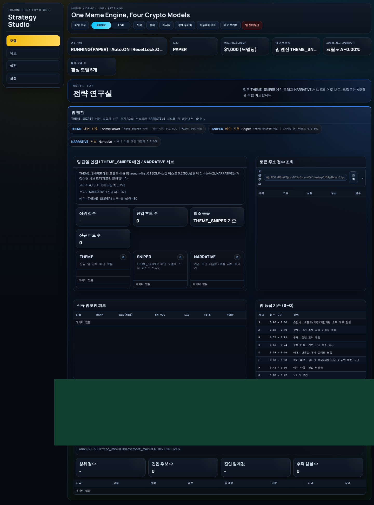

기능보다 운영 리스크를 먼저 재설계
자동매매는 전략 성능뿐 아니라 상태 점검과 복구 동선이 중요하다는 전제에서 출발합니다.
Trading experiment workspace
AutoTrading_ing....-는 전략 성능만 강조하는 페이지가 아니라, 자동매매를 실제로 운영할 때 마주치는 상태 점검, 리포트 축적, 런타임 설정, 초기화 안전장치를 먼저 보여 주는 프로젝트 페이지입니다. 실험을 반복할수록 왜 대시보드와 리포터가 함께 있어야 하는지, 그리고 왜 운영 리스크를 별도 주제로 다뤄야 하는지에 초점을 맞췄습니다.

전략 실험 결과만 보는 대신, 실행 중인 상태와 후속 보고 구조까지 연결해서 읽을 수 있도록 설명합니다.
자동매매는 전략 성능뿐 아니라 상태 점검과 복구 동선이 중요하다는 전제에서 출발합니다.
웹 대시보드와 컨테이너 실행 상태를 한 흐름으로 읽을 수 있도록 운영 중심 구조를 선택했습니다.
실패 상황을 덜 위험하게 만들고, 사후 분석을 가능하게 하는 보고 구조까지 포함합니다.
Chapters
Notion 스텝 문서 제목을 중심에 놓고, 이 저장소가 왜 단순 전략 코드 저장소가 아닌 운영형 실험실에 가까운지 드러내도록 구성했습니다.
수익률 지표만이 아니라 운영자가 감당해야 할 상태 관리와 리스크 통제를 프로젝트의 전면에 둡니다.
앱 실행 상태와 시각화된 대시보드를 연결해 실험 중간 점검이 쉬운 구조를 만들었습니다.
실패 상황을 덜 위험하게 만들고, 사후 분석을 가능하게 하는 보고 구조까지 포함합니다.
Operating notes
자동매매 프로젝트를 처음 보는 사람이 바로 따라가기 쉽도록 실행 흐름과 점검 포인트를 본문에 묶어 두었습니다.
Python, Docker Compose, HTML templates, static assets를 중심으로 운영 콘솔과 보고 구조를 만듭니다.
`scripts/`, `templates/`, `static/`, `reports/`를 나눠 실행 로직과 리포트 산출물을 분리합니다.
크립토 자동매매 실험, 대시보드 관찰, 리포트 자동 생성에 관심 있는 개발자에게 맞춰진 구조입니다.
Search intent
자동매매 대시보드, 크립토 리포트 자동화, 운영 리스크 같은 검색 조합에 맞춰 본문을 설계했습니다.
crypto auto trading dashboard, algorithmic trading console, docker trading app 같은 검색어를 함께 대응합니다.
실제 대시보드 캡처를 Open Graph 이미지로 써서 링크 공유 시 프로젝트 성격이 바로 전달되게 했습니다.
FAQ
현재는 운영 콘솔과 상태 리포트 중심의 실험 및 개선용 프로젝트로 보는 편이 정확합니다.
Docker Compose로 앱과 리포터 컨테이너를 함께 띄우는 방식입니다.
런타임 설정 파일과 보고서 디렉터리, 대시보드 API 연결 상태를 먼저 확인하는 것이 좋습니다.